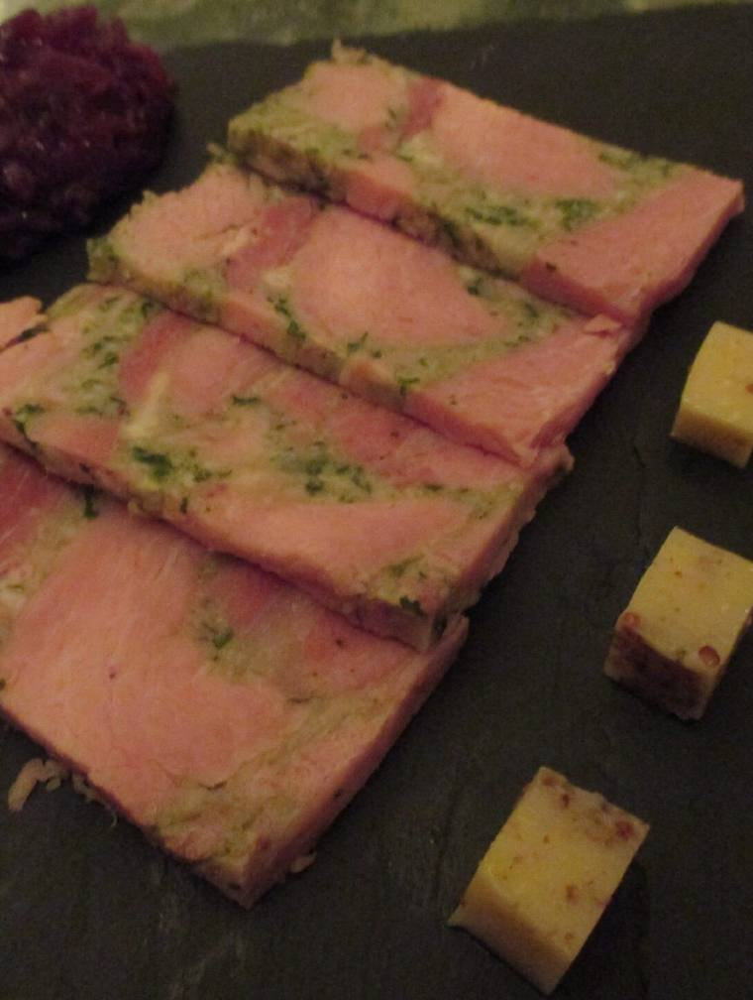

Pâtés en bocaux

Pâtés en bocaux
Pâté de jambon
Préparation : 45 min
Cuisson : 2 h
Ingrédients (pour 1 kg de mêlée environ)
- 400 g de jambon frais
- 150 g d’épaule de porc
- 350 g de gras de porc
- 40 g d’œuf battu
- 30 g de vin blanc
- 12 g d’ail
- 16 g de sel fin
- 2 g de poivre
Quantités adaptées. Les temps de cuisson ne sont pas recalculés.
- Couper le jambon en dés de 1 cm. Hacher fin épaule, gras et ail.
- Ajouter œuf, vin, sel et poivre à la farce, puis incorporer les dés de jambon.
- Remplir des bocaux de 350 ml au plus jusqu’à 2 cm du bord, sans air, fermer avec un joint neuf, plus un bocal témoin.
- Immerger et tenir 2 heures à 100 °C au stérilisateur. Ouvrir le témoin : au moins 78 °C au centre, sinon prolonger.
- Laisser tiédir 30 minutes, refroidir à l’eau tiède puis froide, et mettre aussitôt au réfrigérateur.
À conserver au froid, jamais au placard
Au réfrigérateur entre 0 et 4 °C : 5 jours au plus. Au congélateur à −18 °C, dès le refroidissement : 2 mois au plus.
Les règles des bocaux
D’après le cahier des charges Label Rouge LA 19/05 Pâtés supérieurs, INAO, 2026. Proportions composées dans les limites du cahier des charges. Cuisson CEPROC, conservation au froid.